CODING AGENTS AS PIXEL WORLD MODELS
traex/GPT-6.1-Sol · 0177
点击播放 · 原生 RGB 像素
逐轮保存的候选
回放视频、检查图与代码变化。
每份候选均可单独播放。实际图片检查记录在下方工具轨迹中。
候选 01播放与检查图
点击播放 · 原生 RGB 像素

展开代码变化
--- 上一保存版本
+++ 本次保存版本
@@ -0,0 +1,250 @@
+from pathlib import Path
+import numpy as np
+import cv2
+from scipy.ndimage import gaussian_filter
+from scipy.interpolate import PchipInterpolator
+from PIL import Image
+import artifact_io
+
+ROOT=Path(__file__).resolve().parent
+SS=3
+H,W=144*SS,256*SS
+source=np.array(Image.open(ROOT/'first_frame.png').convert('RGB'))
+photo=cv2.resize(source,(W,H),interpolation=cv2.INTER_CUBIC).astype(np.float32)
+yy,xx=np.mgrid[:H,:W].astype(np.float32)
+xx=(xx+.5)/SS-.5; yy=(yy+.5)/SS-.5
+E=np.deg2rad(17.5); C=np.cos(E); S=np.sin(E)
+CX=132.1; CY=58.
+
+def polygon(points):
+ m=np.zeros((H,W),np.uint8)
+ p=np.round((np.array(points)+.5)*SS-.5).astype(np.int32)
+ cv2.fillPoly(m,[p],255)
+ return m.astype(np.float32)/255
+
+def remap(im,x,y):
+ return cv2.remap(im,((x+.5)*SS-.5).astype(np.float32),((y+.5)*SS-.5).astype(np.float32),cv2.INTER_LINEAR,borderMode=cv2.BORDER_REPLICATE)
+
+bodypts=[(119,30.8),(144.9,30.7),(149,34.5),(153.6,40),(158.5,46.4),(161.3,52.8),(163.4,59),(163.4,65.3),(161.6,71.3),(157.6,77),(151.7,81.5),(143.6,85.3),(135.1,86.8),(125.8,86),(116.8,82.8),(109.8,78),(104.9,71.9),(102,65),(101.5,58.8),(103,51.6),(105.9,44.7),(110.7,38.5),(115,34.5)]
+bodymask=polygon(bodypts)
+spoutpts=[(146.1,35.7),(148.6,34.3),(153.8,34.4),(157.9,36),(159,38.2),(157.8,40.6),(155.4,43),(153.8,46.9),(153.2,50.8),(153.5,56),(154.5,62),(155.3,68),(155.2,74.7),(153.8,79.9),(150.2,83.8),(146,85.6),(140.4,86),(135.4,84.5),(132.2,81.4),(130.5,77.5),(130.9,72.7),(133.3,66.5),(136.3,60.7),(139.1,54.5),(141.4,48.8),(143.1,43.3),(143.8,38.8)]
+spmask=polygon(spoutpts)
+handmask=polygon([(113.1,28),(115.2,26.2),(119.5,25.9),(121.2,28.6),(119.3,32.8),(116.8,35.2),(112.5,35.9),(112.6,31.3)])
+# Background beneath the parts which will leave their initial positions.
+bg=photo.copy()
+remove=np.maximum(spmask,handmask)
+remove=cv2.dilate(remove,np.ones((5,5),np.uint8))
+# Smooth, untextured plaster wall behind the vessel.
+lc=photo[:,int(94*SS):int(99*SS)].mean(axis=1)
+rc=photo[:,int(171*SS):int(179*SS)].mean(axis=1)
+f=np.clip((xx-96)/78,0,1)
+wall=lc[:,None,:]*(1-f[...,None])+rc[:,None,:]*f[...,None]
+bg=bg*(1-remove[...,None])+wall*remove[...,None]
+# A texture of the body, with the foreground nozzle and its dark contact shadow removed.
+tex=photo.copy()
+shadowpts=[(143,38),(147.2,38),(148,50),(144,61),(139.5,70),(135,79),(132,84),(127.5,79),(129.5,67),(134,56),(136.8,43)]
+occ=np.maximum(spmask,polygon(shadowpts))
+occ=cv2.dilate(occ,np.ones((5,5),np.uint8))
+# Extend blue underneath the region beyond the original silhouette before inpainting.
+bodyinside=bodymask>.5
+bluefill=np.zeros_like(tex); bluefill[:]=(13,28,97)
+tex=np.where(bodyinside[...,None],tex,bluefill)
+# Include white glass reflection in the erased texture; the reflection is restored in camera coordinates.
+high=(photo[:,:,0]>153)&(photo[:,:,1]>153)&(photo[:,:,2]>163)&bodyinside&(xx<116)&(yy>43)&(yy<59)
+high=cv2.dilate(high.astype(np.uint8),np.ones((4,4),np.uint8))>0
+inmask=((occ>.1)|high).astype(np.uint8)*255
+tex=cv2.inpaint(np.clip(tex,0,255).astype(np.uint8),inmask,5*SS,cv2.INPAINT_TELEA).astype(np.float32)
+# The newly uncovered blue side has the same hand-painted rose/leaf motif.
+# Inpaint works particularly well here because the original body remains visible on both sides.
+reflection=np.clip(photo-tex,0,255)*gaussian_filter(high.astype(np.float32),.5)[...,None]
+
+# Recover a front surface of a rotationally symmetric ceramic body by an orthographic ray/lathe intersection.
+# Heights are world coordinates; the profile is the neck, belly and narrow bottom attachment.
+prof_y=np.array([-28,-26,-23,-18,-10,0,9,18,25,29],np.float32)
+prof_r=np.array([5,11,18.5,25,29.4,30.8,28.8,23.0,16,13.8],np.float32)
+rf=PchipInterpolator(prof_y,prof_r,extrapolate=False)
+lookup_y=np.linspace(-28,29,1600)
+lookup_r=rf(lookup_y)
+U=CY-yy; X=xx-CX
+bodyd=np.full((H,W),-100.,np.float32)
+active=(bodymask>.01)
+for d in np.arange(47,-48,-.3):
+ Y=U*C+d*S; Z=-U*S+d*C
+ R=np.interp(Y,lookup_y,lookup_r,left=0,right=0)
+ hit=active&(X*X+Z*Z<R*R)&(Y>=-28)&(Y<=29)
+ bodyd[hit]=d;active[hit]=False
+ if not np.any(active):break
+# On subpixel silhouette pixels, use the limiting visible surface.
+bodyd[bodyd<-90]=((CY-yy[bodyd<-90])*S)
+bodyY=U*C+bodyd*S
+bodyZ=-U*S+bodyd*C
+# Keep points on the front side; the side contour is stationary for this axisymmetric pot.
+bodyZ=np.maximum(bodyZ,0)
+# The photographic silhouette provides robust bounds for projected texture reads.
+rowleft=np.full(H,132.); rowright=np.full(H,132.)
+for j in range(H):
+ ids=np.where(bodymask[j]>.4)[0]
+ if len(ids):rowleft[j]=(ids[0]+.5)/SS-.5+.25;rowright[j]=(ids[-1]+.5)/SS-.5-.25
+valid=np.where(rowright-rowleft>1)[0]
+rowleft=np.interp(np.arange(H),valid,rowleft[valid]);rowright=np.interp(np.arange(H),valid,rowright[valid])
+
+# Spout: a smoothly changing circular volume, fitted to the initial nozzle contour.
+py=np.array([34.2,35,36.5,38,40,43,47,51,56,61,66,71,76,80,83,85,86.1])
+pl=np.array([151,147.3,145,144,143.8,143,141.8,140.6,138.3,136.1,133.8,131.6,130.7,131.6,134,137.9,143])
+pr=np.array([151,156,158.2,159,158.3,155.5,153.8,153.3,153.6,154.3,155,155.3,154.9,153.6,151.2,147.8,143])
+cent=(pl+pr)*.5;wid=np.maximum((pr-pl)*.5,.08)
+pdepth=np.array([42,42,41.8,41,39,35.5,33,31,30,30,30,29.5,28.5,27.5,26,24.5,23])
+# Depth here is in camera coordinates, with the nozzle on the visible front of the belly.
+zwidth=wid*.88
+
+def render_spout(angle):
+ ca,sa=np.cos(angle),np.sin(angle)
+ # The rotated volume is queried analytically along camera rays; no external renderer.
+ box=(xx>91)&(xx<171)&(yy>25)&(yy<91)
+ ids=np.where(box)
+ xt=X[ids];ut=U[ids]
+ aX=xt*ca-ut*S*sa; bX=C*sa
+ aZ=-xt*sa-ut*S*ca; bZ=C*ca
+ aY=ut*C; bY=S
+ aV=CY-aY*C+aZ*S; bV=-bY*C+bZ*S
+ aD=aY*S+aZ*C; bD=bY*S+bZ*C
+ n=len(xt);depth=np.full(n,-100.,np.float32)
+ remaining=np.ones(n,bool)
+ previous=np.full(n,90.,np.float32)
+ # Advancing in depth ensures correct front/back occlusion and an unbroken nozzle surface.
+ for d in np.arange(75,-56,-.75):
+ ix=np.where(remaining)[0]
+ if not len(ix):break
+ v=aV[ix]+d*bV;xs=aX[ix]+d*bX+CX;ds=aD[ix]+d*bD
+ ct=np.interp(v,py,cent); wd=np.interp(v,py,wid);zd=np.interp(v,py,pdepth);zw=np.interp(v,py,zwidth)
+ inside=((xs-ct)/wd)**2+((ds-zd)/zw)**2<=1
+ inside&=(v>=py[0])&(v<=py[-1])
+ take=ix[inside]
+ depth[take]=d;remaining[take]=False
+ ok=depth>-90
+ # Bisect the front intersection for smooth, subpixel motion.
+ ix=np.where(ok)[0];lo=depth[ix];hi=lo+.75
+ for _ in range(6):
+ mid=(lo+hi)*.5; v=aV[ix]+mid*bV;xs=aX[ix]+mid*bX+CX;ds=aD[ix]+mid*bD
+ ct=np.interp(v,py,cent);wd=np.interp(v,py,wid);zd=np.interp(v,py,pdepth);zw=np.interp(v,py,zwidth)
+ inside=(((xs-ct)/wd)**2+((ds-zd)/zw)**2<=1)&(v>=py[0])&(v<=py[-1])
+ lo=np.where(inside,mid,lo);hi=np.where(inside,hi,mid)
+ depth[ix]=(lo+hi)*.5
+ depmap=np.full((H,W),-100.,np.float32);depmap[ids]=depth
+ uvx=np.zeros((H,W),np.float32);uvy=uvx.copy()
+ uvx[ids]=aX+depth*bX+CX;uvy[ids]=aV+depth*bV
+ col=remap(photo,uvx,uvy)
+ # Removing photographic blue at the silhouette avoids a colored fringe.
+ # Only texture coordinates within the front nozzle shape are used by the solid volume.
+ return depmap,col
+
+# Handle is a curved red ceramic tube behind the body, opposite the nozzle.
+hr=np.array([15,22,29,34,37,39,38,34,27,22],float)
+hy=np.array([20,23,23,20,14,7,0,-5,-8,-9],float)
+t=np.arange(len(hr));tt=np.linspace(0,len(hr)-1,180)
+rr=PchipInterpolator(t,hr)(tt);hh=PchipInterpolator(t,hy)(tt)
+B=np.deg2rad(28)
+hx=-rr*np.sin(B);hz=-rr*np.cos(B)
+
+def handle(angle):
+ ca,sa=np.cos(angle),np.sin(angle)
+ rx=hx*ca-hz*sa;rz=hx*sa+hz*ca
+ px=CX+rx;pyy=CY-hh*C+rz*S;pz=hh*S+rz*C
+ depth=np.full((H,W),-100.,np.float32);idx=np.zeros((H,W),np.int32)
+ rad=2.75
+ for i,(a,b,d) in enumerate(zip(px,pyy,pz)):
+ x0=max(0,int((a-rad+0.5)*SS)-1);x1=min(W,int((a+rad+.5)*SS)+2)
+ y0=max(0,int((b-rad+.5)*SS)-1);y1=min(H,int((b+rad+.5)*SS)+2)
+ sx=xx[y0:y1,x0:x1]-a;sy=yy[y0:y1,x0:x1]-b
+ vv=rad*rad-sx*sx-sy*sy
+ z=d+np.sqrt(np.maximum(vv,0));good=(vv>0)&(z>depth[y0:y1,x0:x1])
+ depth[y0:y1,x0:x1][good]=z[good];idx[y0:y1,x0:x1][good]=i
+ nx=(xx-px[idx])/rad;ny=-(yy-pyy[idx])/rad;nz=np.sqrt(np.maximum(0,1-nx*nx-ny*ny))
+ lighting=np.clip(-.55*nx+.6*ny+.6*nz,0,1)
+ shade=.49+.54*lighting
+ col=np.stack([168*shade,30*shade,19*shade],axis=-1)
+ shine=np.exp(-((nx+.4)**2+(ny-.4)**2)/.03)*21
+ col+=shine[...,None]
+ # Small white glazing dots on the colorful ornamental handle.
+ dots=(np.sin(tt[idx]*6.5)**2<.025)&(np.abs(nx+.16)<.23)
+ col=np.where(dots[...,None],col*.25+np.array([181,181,155])*.75,col)
+ return depth,col
+
+# Cylindrical texture movement of the green lid and pedestal. Their rotational silhouettes are unchanged.
+lidmask=polygon([(117.6,31.5),(118.3,27.8),(120.2,23.8),(124.2,20.5),(128.7,19),(135.4,19),(139.9,20.9),(143.8,24.1),(146.4,28.1),(146.6,31.3),(140.4,32),(123.5,32)])
+footmask=polygon([(121.6,84.2),(141.5,84.2),(145.5,87.8),(150,90.2),(152,93),(151.1,96.2),(145.9,98),(121.1,98.6),(115.5,96.5),(113.3,93.7),(115.7,90.3),(118.9,87.1)])
+bandmask=polygon([(114.7,96.3),(121.4,98.1),(135,99),(146.5,97.8),(150.5,96.4),(149.7,100),(139.3,102),(124,101.7),(116.1,99.4)])
+
+def row_rotate(mask,angle,cy,reflect=True):
+ l=np.full(H,CX);r=l.copy()
+ for j in range(H):
+ ids=np.where(mask[j]>.4)[0]
+ if len(ids):l[j]=(ids[0]+.5)/SS-.5;r[j]=(ids[-1]+.5)/SS-.5
+ radius=np.maximum((r-l)*.5,.1);ctr=(r+l)*.5
+ u=np.clip((xx-ctr[:,None])/radius[:,None],-.995,.995)
+ phi=np.arcsin(u)+angle
+ sx=ctr[:,None]+radius[:,None]*np.sin(phi)
+ return remap(photo,sx,yy)
+
+
+def body(angle):
+ ca,sa=np.cos(angle),np.sin(angle)
+ ox=X*ca+bodyZ*sa;oz=-X*sa+bodyZ*ca
+ sy=CY-bodyY*C+np.abs(oz)*S
+ sy=np.clip(sy,31.1,85.9)
+ j=(sy+.5)*SS-.5
+ l=np.interp(j,np.arange(H),rowleft);r=np.interp(j,np.arange(H),rowright)
+ sx=np.clip(CX+ox,l,r)
+ col=remap(tex,sx,sy)
+ # Keep the broad fixed studio illumination in camera space while painted flowers rotate.
+ dst_nx=np.clip(X/31,-1,1);src_nx=np.clip(ox/31,-1,1)
+ dst_ny=np.clip(bodyY/29,-1,1)
+ dst_nz=np.maximum(bodyZ/31,0);src_nz=np.maximum(np.abs(oz)/31,0)
+ sd=.49+.51*np.clip(-.46*dst_nx+.52*dst_ny+.69*dst_nz,0,1)
+ so=.49+.51*np.clip(-.46*src_nx+.52*dst_ny+.69*src_nz,0,1)
+ ratio=np.clip(sd/so,.65,1.6)
+ col=col*ratio[...,None]+reflection
+ return np.clip(col,0,255)
+
+# Smooth antialiasing from supersampling, rather than a frame-dependent edge change.
+def over(canvas,color,alpha):
+ return canvas*(1-alpha[...,None])+color*alpha[...,None]
+
+def frame(angle):
+ out=bg.copy()
+ hd,hc=handle(angle)
+ ha=(hd>-90).astype(np.float32)
+ out=over(out,hc,ha)
+ out=over(out,body(angle),bodymask)
+ # Parts of handle in front of the body would be visible, although in this shot it remains behind.
+ out=over(out,hc,ha*(hd>bodyd)*(bodymask>.5))
+ out=over(out,row_rotate(lidmask,angle,24.5),lidmask)
+ out=over(out,row_rotate(footmask,angle,92.5),footmask)
+ out=over(out,row_rotate(bandmask,angle,99),bandmask)
+ # The black-and-white spherical lid knob rotates about the same upright axis.
+ kx=xx-132.1;ky=yy-15.5
+ kr=4.3
+ k2=(kx/4.4)**2+(ky/4.2)**2
+ kz=kr*np.sqrt(np.maximum(0,1-k2));Yk=-ky*C+kz*S;Zk=ky*S+kz*C
+ ca,sa=np.cos(angle),np.sin(angle)
+ ox=kx*ca+Zk*sa;oz=-kx*sa+Zk*ca
+ ku=132.1+ox;kv=15.5-Yk*C+np.abs(oz)*S
+ km=np.clip((1-k2)*7,0,1)
+ out=over(out,remap(photo,ku,kv),km)
+ dep,col=render_spout(angle)
+ a=(dep>-90)&((bodymask<.4)|(dep>bodyd))
+ out=over(out,col,a.astype(np.float32))
+ return cv2.resize(np.clip(out,0,255).astype(np.uint8),(256,144),interpolation=cv2.INTER_AREA)
+
+
+def main():
+ frames=[source]
+ for i in range(1,20):
+ angle=np.deg2rad(60)*i/19
+ im=frame(angle)
+ frames.append(im)
+ if i in [1,5,10,15,19]:Image.fromarray(im).save(ROOT/'.tmp'/f'candidate_{i:02}.png')
+ print('frame',i,flush=True)
+ artifact_io.save(np.stack(frames).astype(np.uint8),ROOT)
+
+if __name__=='__main__':main()
候选 02播放与检查图
点击播放 · 原生 RGB 像素

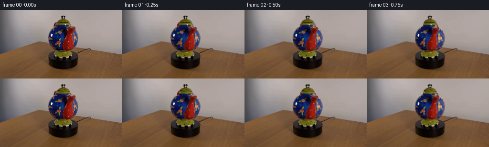
展开代码变化
--- 上一保存版本
+++ 本次保存版本
@@ -53,10 +53,30 @@
high=(photo[:,:,0]>153)&(photo[:,:,1]>153)&(photo[:,:,2]>163)&bodyinside&(xx<116)&(yy>43)&(yy<59)
high=cv2.dilate(high.astype(np.uint8),np.ones((4,4),np.uint8))>0
inmask=((occ>.1)|high).astype(np.uint8)*255
-tex=cv2.inpaint(np.clip(tex,0,255).astype(np.uint8),inmask,5*SS,cv2.INPAINT_TELEA).astype(np.float32)
-# The newly uncovered blue side has the same hand-painted rose/leaf motif.
-# Inpaint works particularly well here because the original body remains visible on both sides.
-reflection=np.clip(photo-tex,0,255)*gaussian_filter(high.astype(np.float32),.5)[...,None]
+# Infer the unpainted cobalt glaze from neighboring blue ceramic, not from rose colors.
+clean=(bodymask>.5)&(occ<.05)&(photo[:,:,2]>photo[:,:,0]*1.55)&(photo[:,:,2]>photo[:,:,1]*1.3)&(photo[:,:,0]<55)&(~high)
+wgt=gaussian_filter(clean.astype(np.float32),6*SS)
+blue=np.stack([gaussian_filter(photo[:,:,k]*clean,6*SS)/(wgt+1e-6) for k in range(3)],axis=-1)
+blue=np.where((wgt>.004)[...,None],blue,np.array([14,31,99]))
+fillalpha=gaussian_filter((occ>.1).astype(np.float32),.4*SS)
+tex=tex*(1-fillalpha[...,None])+blue*fillalpha[...,None]
+# Add intact matching painted flowers to the previously unseen blue surface. Every mark
+# is copied from the provided pot rather than invented from a separate reference.
+flowers=[(122.5,68.3,143.8,65.5,.83),(125.4,46.5,146.6,43.5,.70)]
+for fx,fy,dx,dy,scale in flowers:
+ sx=fx+(xx-dx)/scale;sy=fy+(yy-dy)/scale
+ patch=remap(photo,sx,sy)
+ patchblue=remap(blue,sx,sy)
+ # pigment includes red roses and yellow-green leaves but not the glaze.
+ pigment=np.clip((patch[:,:,0]-patch[:,:,2]*.52-10)/35,0,1)
+ ell=((sx-fx)/7.8)**2+((sy-fy)/9.5)**2
+ pigment*=np.clip((1-ell)*5,0,1)
+ pigment*=fillalpha*bodymask
+ tex=tex*(1-pigment[...,None])+patch*pigment[...,None]
+# Studio reflection is fixed spatially on the glossy spherical ceramic.
+hi_rgb=cv2.inpaint(np.clip(photo,0,255).astype(np.uint8),high.astype(np.uint8)*255,3*SS,cv2.INPAINT_TELEA).astype(np.float32)
+reflection=np.clip(photo-hi_rgb,0,255)*gaussian_filter(high.astype(np.float32),.5)[...,None]
+tex=np.where(high[...,None],hi_rgb,tex)
# Recover a front surface of a rotationally symmetric ceramic body by an orthographic ray/lathe intersection.
# Heights are world coordinates; the profile is the neck, belly and narrow bottom attachment.
@@ -133,7 +153,19 @@
depmap=np.full((H,W),-100.,np.float32);depmap[ids]=depth
uvx=np.zeros((H,W),np.float32);uvy=uvx.copy()
uvx[ids]=aX+depth*bX+CX;uvy[ids]=aV+depth*bV
+ j=(uvy+.5)*SS-.5
+ # Photos describe only the front half: map any side circumference back onto red
+ # ceramic, avoiding the neighboring blue belly at the lateral rim.
+ left=np.interp(uvy,py,pl)+.65
+ right=np.interp(uvy,py,pr)-.65
+ uvx=np.clip(uvx,left,right)
col=remap(photo,uvx,uvy)
+ bad=(col[:,:,2]>col[:,:,0]*.7)&(uvy>40)
+ # A newly visible side of the nozzle has the same red enamel and studio shading.
+ vcenter=np.interp(uvy,py,cent);vwidth=np.interp(uvy,py,wid)
+ n=np.clip((uvx-vcenter)/(vwidth+.1),-1,1)
+ red=np.stack([123+27*n,20+9*n,13+5*n],axis=-1)
+ col=np.where(bad[...,None],red,col)
# Removing photographic blue at the silhouette avoids a colored fringe.
# Only texture coordinates within the front nozzle shape are used by the solid volume.
return depmap,col
@@ -202,7 +234,7 @@
dst_nz=np.maximum(bodyZ/31,0);src_nz=np.maximum(np.abs(oz)/31,0)
sd=.49+.51*np.clip(-.46*dst_nx+.52*dst_ny+.69*dst_nz,0,1)
so=.49+.51*np.clip(-.46*src_nx+.52*dst_ny+.69*src_nz,0,1)
- ratio=np.clip(sd/so,.65,1.6)
+ ratio=np.clip(sd/so,.8,1.15)
col=col*ratio[...,None]+reflection
return np.clip(col,0,255)
@@ -219,8 +251,8 @@
# Parts of handle in front of the body would be visible, although in this shot it remains behind.
out=over(out,hc,ha*(hd>bodyd)*(bodymask>.5))
out=over(out,row_rotate(lidmask,angle,24.5),lidmask)
- out=over(out,row_rotate(footmask,angle,92.5),footmask)
- out=over(out,row_rotate(bandmask,angle,99),bandmask)
+ out=over(out,photo,footmask)
+ out=over(out,photo,bandmask)
# The black-and-white spherical lid knob rotates about the same upright axis.
kx=xx-132.1;ky=yy-15.5
kr=4.3
候选 03播放与检查图

候选 04播放与检查图
点击播放 · 原生 RGB 像素
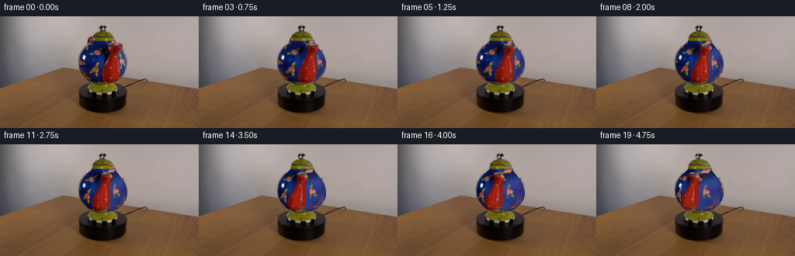
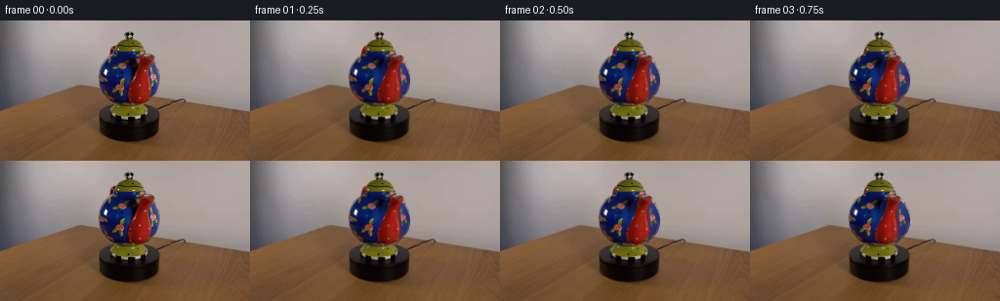
展开代码变化
--- 上一保存版本
+++ 本次保存版本
@@ -78,6 +78,13 @@
reflection=np.clip(photo-hi_rgb,0,255)*gaussian_filter(high.astype(np.float32),.5)[...,None]
tex=np.where(high[...,None],hi_rgb,tex)
+# Glossy side lighting is a broad camera-space reflection, not a pigment to advect.
+side=np.clip((xx-149)/12,0,1)*np.clip((yy-37)/10,0,1)*np.clip((80-yy)/10,0,1)*bodymask
+# Preserve pigment while removing the neutral glare near the right contour.
+neutral=np.minimum(tex[:,:,0],tex[:,:,1])
+remove_glare=np.clip(neutral-24,0,62)*side
+tex=np.maximum(tex-remove_glare[...,None]*np.array([.62,.67,.38]),0)
+
# Recover a front surface of a rotationally symmetric ceramic body by an orthographic ray/lathe intersection.
# Heights are world coordinates; the profile is the neck, belly and narrow bottom attachment.
prof_y=np.array([-28,-26,-23,-18,-10,0,9,18,25,29],np.float32)
@@ -104,7 +111,7 @@
rowleft=np.full(H,132.); rowright=np.full(H,132.)
for j in range(H):
ids=np.where(bodymask[j]>.4)[0]
- if len(ids):rowleft[j]=(ids[0]+.5)/SS-.5+.25;rowright[j]=(ids[-1]+.5)/SS-.5-.25
+ if len(ids):rowleft[j]=(ids[0]+.5)/SS-.5+1.1;rowright[j]=(ids[-1]+.5)/SS-.5-1.1
valid=np.where(rowright-rowleft>1)[0]
rowleft=np.interp(np.arange(H),valid,rowleft[valid]);rowright=np.interp(np.arange(H),valid,rowright[valid])
@@ -272,7 +279,7 @@
def main():
frames=[source]
for i in range(1,20):
- angle=np.deg2rad(60)*i/19
+ angle=np.deg2rad(40)*i/19
im=frame(angle)
frames.append(im)
if i in [1,5,10,15,19]:Image.fromarray(im).save(ROOT/'.tmp'/f'candidate_{i:02}.png')
候选 05播放与检查图
点击播放 · 原生 RGB 像素
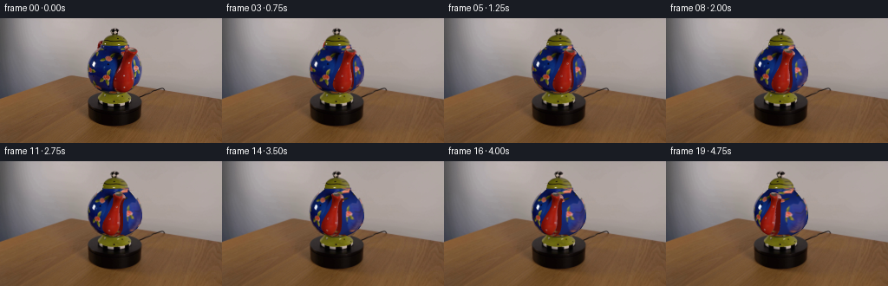
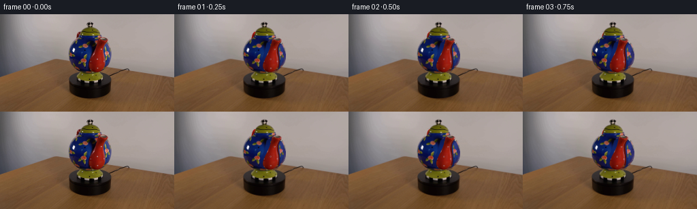
展开代码变化
--- 上一保存版本
+++ 本次保存版本
@@ -58,6 +58,12 @@
wgt=gaussian_filter(clean.astype(np.float32),6*SS)
blue=np.stack([gaussian_filter(photo[:,:,k]*clean,6*SS)/(wgt+1e-6) for k in range(3)],axis=-1)
blue=np.where((wgt>.004)[...,None],blue,np.array([14,31,99]))
+# Carry the measured left-front glaze smoothly under the missing nozzle, avoiding
+# contamination by its black cast shadow and the edge rim lighting.
+by=np.array([31,38,45,54,62,70,78,86])
+bc=np.array([[12,25,83],[12,26,84],[13,31,96],[14,38,108],[13,33,101],[13,27,88],[17,24,73],[18,24,62]])
+baseblue=np.stack([np.interp(yy,by,bc[:,k]) for k in range(3)],axis=-1)
+blue=baseblue*.78+blue*.22
fillalpha=gaussian_filter((occ>.1).astype(np.float32),.4*SS)
tex=tex*(1-fillalpha[...,None])+blue*fillalpha[...,None]
# Add intact matching painted flowers to the previously unseen blue surface. Every mark
@@ -171,8 +177,15 @@
# A newly visible side of the nozzle has the same red enamel and studio shading.
vcenter=np.interp(uvy,py,cent);vwidth=np.interp(uvy,py,wid)
n=np.clip((uvx-vcenter)/(vwidth+.1),-1,1)
- red=np.stack([123+27*n,20+9*n,13+5*n],axis=-1)
+ backn=np.clip((aX+depth*bX+CX-np.interp(aV+depth*bV,py,cent))/(np.interp(aV+depth*bV,py,wid)+.1),-1,1)
+ side_n=np.zeros((H,W),np.float32);side_n[ids]=backn
+ # Side glazing is dark red, not a flat scarlet panel.
+ red=np.stack([119-31*np.maximum(side_n,0),19-6*np.maximum(side_n,0),12-4*np.maximum(side_n,0)],axis=-1)
col=np.where(bad[...,None],red,col)
+ # The reverse/side circumference is smoothly shaded; no front-image edge stripes.
+ original_x=np.zeros((H,W),np.float32);original_x[ids]=aX+depth*bX+CX
+ edge=np.clip((original_x-right+1.0)/1.8,0,1)*(uvy>40)
+ col=col*(1-edge[...,None])+red*edge[...,None]
# Removing photographic blue at the silhouette avoids a colored fringe.
# Only texture coordinates within the front nozzle shape are used by the solid volume.
return depmap,col
可观测工具轨迹
实际执行的命令与返回图片。
命令 1exit 0
/bin/bash -lc 'ls -la && cat prompt.txt && cat GENERATION_RULES.md'
命令 2exit 0
/bin/bash -lc "cat artifact_io.py && python - <<'PY'
from PIL import Image
im=Image.open('first_frame.png'); print(im.size);im.resize((1024,576)).save('.tmp/zoom.png')
PY"命令 3exit 0
/bin/bash -lc "python - <<'PY'
from PIL import Image,ImageDraw
im=Image.open('first_frame.png').resize((1536,864))
d=ImageDraw.Draw(im)
for x in range(100,171,5):
d.line((x*6,5*6,x*6,105*6),fill=(255,255,255,100),width=1);d.text((x*6,5*6),str(x),fill='red')
for y in range(10,101,5):
d.line((95*6,y*6,171*6,y*6),fill=(255,255,255,100),width=1);d.text((95*6,y*6),str(y),fill='red')
im.save('.tmp/grid.png')
PY"命令 4exit 0
/bin/bash -lc "python - <<'PY' import importlib.util for x in ['numpy','scipy','cv2','PIL']: print(x, bool(importlib.util.find_spec(x))) PY"
命令 5exit 0
/bin/bash -lc "cat > generate.py <<'PY'
from pathlib import Path
import numpy as np
import cv2
from scipy.ndimage import gaussian_filter
from scipy.interpolate import PchipInterpolator
from PIL import Image
import artifact_io
ROOT=Path(__file__).resolve().parent
SS=3
H,W=144*SS,256*SS
source=np.array(Image.open(ROOT/'first_frame.png').convert('RGB'))
photo=cv2.resize(source,(W,H),interpolation=cv2.INTER_CUBIC).astype(np.float32)
yy,xx=np.mgrid[:H,:W].astype(np.float32)
xx=(xx+.5)/SS-.5; yy=(yy+.5)/SS-.5
E=np.deg2rad(17.5); C=np.cos(E); S=np.sin(E)
CX=132.1; CY=58.
def polygon(points):
m=np.zeros((H,W),np.uint8)
p=np.round((np.array(points)+.5)*SS-.5).astype(np.int32)
cv2.fillPoly(m,[p],255)
return m.astype(np.float32)/255
def remap(im,x,y):
return cv2.remap(im,((x+.5)*SS-.5).astype(np.float32),((y+.5)*SS-.5).astype(np.float32),cv2.INTER_LINEAR,borderMode=cv2.BORDER_REPLICATE)
bodypts=[(119,30.8),(144.9,30.7),(149,34.5),(153.6,40),(158.5,46.4),(161.3,52.8),(163.4,59),(163.4,65.3),(161.6,71.3),(157.6,77),(151.7,81.5),(143.6,85.3),(135.1,86.8),(125.8,86),(116.8,82.8),(109.8,78),(104.9,71.9),(102,65),(101.5,58.8),(103,51.6),(105.9,44.7),(110.7,38.5),(115,34.5)]
bodymask=polygon(bodypts)
spoutpts=[(146.1,35.7),(148.6,34.3),(153.8,34.4),(157.9,36),(159,38.2),(157.8,40.6),(155.4,43),(153.8,46.9),(153.2,50.8),(153.5,56),(154.5,62),(155.3,68),(155.2,74.7),(153.8,79.9),(150.2,83.8),(146,85.6),(140.4,86),(135.4,84.5),(132.2,81.4),(130.5,77.5),(130.9,72.7),(133.3,66.5),(136.3,60.7),(139.1,54.5),(141.4,48.8),(143.1,43.3),(143.8,38.8)]
spmask=polygon(spoutpts)
handmask=polygon([(113.1,28),(115.2,26.2),(119.5,25.9),(121.2,28.6),(119.3,32.8),(116.8,35.2),(112.5,35.9),(112.6,31.3)])
# Background beneath the parts which will leave their initial positions.
bg=photo.copy()
remove=np.maximum(spmask,handmask)
remove=cv2.dilate(remove,np.ones((5,5),np.uint8))
# Smooth, untextured plaster wall behind the vessel.
lc=photo[:,int(94*SS):int(99*SS)].mean(axis=1)
rc=photo[:,int(171*SS):int(179*SS)].mean(axis=1)
f=np.clip((xx-96)/78,0,1)
wall=lc[:,None,:]*(1-f[...,None])+rc[:,None,:]*f[...,None]
bg=bg*(1-remove[...,None])+wall*remove[...,None]
# A texture of the body, with the foreground nozzle and its dark contact shadow removed.
tex=photo.copy()
shadowpts=[(143,38),(147.2,38),(148,50),(144,61),(139.5,70),(135,79),(132,84),(127.5,79),(129.5,67),(134,56),(136.8,43)]
occ=np.maximum(spmask,polygon(shadowpts))
occ=cv2.dilate(occ,np.ones((5,5),np.uint8))
# Extend blue underneath the region beyond the original silhouette before inpainting.
bodyinside=bodymask>.5
bluefill=np.zeros_like(tex); bluefill[:]=(13,28,97)
tex=np.where(bodyinside[...,None],tex,bluefill)
# Include white glass reflection in the erased texture; the reflection is restored in camera coordinates.
high=(photo[:,:,0]>153)&(photo[:,:,1]>153)&(photo[:,:,2]>163)&bodyinside&(xx<116)&(yy>43)&(yy<59)
high=cv2.dilate(high.astype(np.uint8),np.ones((4,4),np.uint8))>0
inmask=((occ>.1)|high).astype(np.uint8)*255
tex=cv2.inpaint(np.clip(tex,0,255).astype(np.uint8),inmask,5*SS,cv2.INPAINT_TELEA).astype(np.float32)
# The newly uncovered blue side has the same hand-painted rose/leaf motif.
# Inpaint works particularly well here because the original body remains visible on both sides.
reflection=np.clip(photo-tex,0,255)*gaussian_filter(high.astype(np.float32),.5)[...,None]
# Recover a front surface of a rotationally symmetric ceramic body by an orthographic ray/lathe intersection.
# Heights are world coordinates; the profile is the neck, belly and narrow bottom attachment.
prof_y=np.array([-28,-26,-23,-18,-10,0,9,18,25,29],np.float32)
prof_r=np.array([5,11,18.5,25,29.4,30.8,28.8,23.0,16,13.8],np.float32)
rf=PchipInterpolator(prof_y,prof_r,extrapolate=False)
lookup_y=np.linspace(-28,29,1600)
lookup_r=rf(lookup_y)
U=CY-yy; X=xx-CX
bodyd=np.full((H,W),-100.,np.float32)
active=(bodymask>.01)
for d in np.arange(47,-48,-.3):
Y=U*C+d*S; Z=-U*S+d*C
R=np.interp(Y,lookup_y,lookup_r,left=0,right=0)
hit=active&(X*X+Z*Z<R*R)&(Y>=-28)&(Y<=29)
bodyd[hit]=d;active[hit]=False
if not np.any(active):break
# On subpixel silhouette pixels, use the limiting visible surface.
bodyd[bodyd<-90]=((CY-yy[bodyd<-90])*S)
bodyY=U*C+bodyd*S
bodyZ=-U*S+bodyd*C
# Keep points on the front side; the side contour is stationary for this axisymmetric pot.
bodyZ=np.maximum(bodyZ,0)
# The photographic silhouette provides robust bounds for projected texture reads.
rowleft=np.full(H,132.); rowright=np.full(H,132.)
for j in range(H):
ids=np.where(bodymask[j]>.4)[0]
if len(ids):rowleft[j]=(ids[0]+.5)/SS-.5+.25;rowright[j]=(ids[-1]+.5)/SS-.5-.25
valid=np.where(rowright-rowleft>1)[0]
rowleft=np.interp(np.arange(H),valid,rowleft[valid]);rowright=np.interp(np.arange(H),valid,rowright[valid])
# Spout: a smoothly changing circular volume, fitted to the initial nozzle contour.
py=np.array([34.2,35,36.5,38,40,43,47,51,56,61,66,71,76,80,83,85,86.1])
pl=np.array([151,147.3,145,144,143.8,143,141.8,140.6,138.3,136.1,133.8,131.6,130.7,131.6,134,137.9,143])
pr=np.array([151,156,158.2,159,158.3,155.5,153.8,153.3,153.6,154.3,155,155.3,154.9,153.6,151.2,147.8,143])
cent=(pl+pr)*.5;wid=np.maximum((pr-pl)*.5,.08)
pdepth=np.array([42,42,41.8,41,39,35.5,33,31,30,30,30,29.5,28.5,27.5,26,24.5,23])
# Depth here is in camera coordinates, with the nozzle on the visible front of the belly.
zwidth=wid*.88
def render_spout(angle):
ca,sa=np.cos(angle),np.sin(angle)
# The rotated volume is queried analytically along camera rays; no external renderer.
box=(xx>91)&(xx<171)&(yy>25)&(yy<91)
ids=np.where(box)
xt=X[ids];ut=U[ids]
aX=xt*ca-ut*S*sa; bX=C*sa
aZ=-xt*sa-ut*S*ca; bZ=C*ca
aY=ut*C; bY=S
aV=CY-aY*C+aZ*S; bV=-bY*C+bZ*S
aD=aY*S+aZ*C; bD=bY*S+bZ*C
n=len(xt);depth=np.full(n,-100.,np.float32)
remaining=np.ones(n,bool)
previous=np.full(n,90.,np.float32)
# Advancing in depth ensures correct front/back occlusion and an unbroken nozzle surface.
for d in np.arange(75,-56,-.75):
ix=np.where(remaining)[0]
if not len(ix):break
v=aV[ix]+d*bV;xs=aX[ix]+d*bX+CX;ds=aD[ix]+d*bD
ct=np.interp(v,py,cent); wd=np.interp(v,py,wid);zd=np.interp(v,py,pdepth);zw=np.interp(v,py,zwidth)
inside=((xs-ct)/wd)**2+((ds-zd)/zw)**2<=1
inside&=(v>=py[0])&(v<=py[-1])
take=ix[inside]
depth[take]=d;remaining[take]=False
ok=depth>-90
# Bisect the front intersection for smooth, subpixel motion.
ix=np.where(ok)[0];lo=depth[ix];hi=lo+.75
for _ in range(6):
mid=(lo+hi)*.5; v=aV[ix]+mid*bV;xs=aX[ix]+mid*bX+CX;ds=aD[ix]+mid*bD
ct=np.interp(v,py,cent);wd=np.interp(v,py,wid);zd=np.interp(v,py,pdepth);zw=np.interp(v,py,zwidth)
inside=(((xs-ct)/wd)**2+((ds-zd)/zw)**2<=1)&(v>=py[0])&(v<=py[-1])
lo=np.where(inside,mid,lo);hi=np.where(inside,hi,mid)
depth[ix]=(lo+hi)*.5
depmap=np.full((H,W),-100.,np.float32);depmap[ids]=depth
uvx=np.zeros((H,W),np.float32);uvy=uvx.copy()
uvx[ids]=aX+depth*bX+CX;uvy[ids]=aV+depth*bV
col=remap(photo,uvx,uvy)
# Removing photographic blue at the silhouette avoids a colored fringe.
# Only texture coordinates within the front nozzle shape are used by the solid volume.
return depmap,col
# Handle is a curved red ceramic tube behind the body, opposite the nozzle.
hr=np.array([15,22,29,34,37,39,38,34,27,22],float)
hy=np.array([20,23,23,20,14,7,0,-5,-8,-9],float)
t=np.arange(len(hr));tt=np.linspace(0,len(hr)-1,180)
rr=PchipInterpolator(t,hr)(tt);hh=PchipInterpolator(t,hy)(tt)
B=np.deg2rad(28)
hx=-rr*np.sin(B);hz=-rr*np.cos(B)
def handle(angle):
ca,sa=np.cos(angle),np.sin(angle)
rx=hx*ca-hz*sa;rz=hx*sa+hz*ca
px=CX+rx;pyy=CY-hh*C+rz*S;pz=hh*S+rz*C
depth=np.full((H,W),-100.,np.float32);idx=np.zeros((H,W),np.int32)
rad=2.75
for i,(a,b,d) in enumerate(zip(px,pyy,pz)):
x0=max(0,int((a-rad+0.5)*SS)-1);x1=min(W,int((a+rad+.5)*SS)+2)
y0=max(0,int((b-rad+.5)*SS)-1);y1=min(H,int((b+rad+.5)*SS)+2)
sx=xx[y0:y1,x0:x1]-a;sy=yy[y0:y1,x0:x1]-b
vv=rad*rad-sx*sx-sy*sy
z=d+np.sqrt(np.maximum(vv,0));good=(vv>0)&(z>depth[y0:y1,x0:x1])
depth[y0:y1,x0:x1][good]=z[good];idx[y0:y1,x0:x1][good]=i
nx=(xx-px[idx])/rad;ny=-(yy-pyy[idx])/rad;nz=np.sqrt(np.maximum(0,1-nx*nx-ny*ny))
lighting=np.clip(-.55*nx+.6*ny+.6*nz,0,1)
shade=.49+.54*lighting
col=np.stack([168*shade,30*shade,19*shade],axis=-1)
shine=np.exp(-((nx+.4)**2+(ny-.4)**2)/.03)*21
col+=shine[...,None]
# Small white glazing dots on the colorful ornamental handle.
dots=(np.sin(tt[idx]*6.5)**2<.025)&(np.abs(nx+.16)<.23)
col=np.where(dots[...,None],col*.25+np.array([181,181,155])*.75,col)
return depth,col
# Cylindrical texture movement of the green lid and pedestal. Their rotational silhouettes are unchanged.
lidmask=polygon([(117.6,31.5),(118.3,27.8),(120.2,23.8),(124.2,20.5),(128.7,19),(135.4,19),(139.9,20.9),(143.8,24.1),(146.4,28.1),(146.6,31.3),(140.4,32),(123.5,32)])
footmask=polygon([(121.6,84.2),(141.5,84.2),(145.5,87.8),(150,90.2),(152,93),(151.1,96.2),(145.9,98),(121.1,98.6),(115.5,96.5),(113.3,93.7),(115.7,90.3),(118.9,87.1)])
bandmask=polygon([(114.7,96.3),(121.4,98.1),(135,99),(146.5,97.8),(150.5,96.4),(149.7,100),(139.3,102),(124,101.7),(116.1,99.4)])
def row_rotate(mask,angle,cy,reflect=True):
l=np.full(H,CX);r=l.copy()
for j in range(H):
ids=np.where(mask[j]>.4)[0]
if len(ids):l[j]=(ids[0]+.5)/SS-.5;r[j]=(ids[-1]+.5)/SS-.5
radius=np.maximum((r-l)*.5,.1);ctr=(r+l)*.5
u=np.clip((xx-ctr[:,None])/radius[:,None],-.995,.995)
phi=np.arcsin(u)+angle
sx=ctr[:,None]+radius[:,None]*np.sin(phi)
return remap(photo,sx,yy)
def body(angle):
ca,sa=np.cos(angle),np.sin(angle)
ox=X*ca+bodyZ*sa;oz=-X*sa+bodyZ*ca
sy=CY-bodyY*C+np.abs(oz)*S
sy=np.clip(sy,31.1,85.9)
j=(sy+.5)*SS-.5
l=np.interp(j,np.arange(H),rowleft);r=np.interp(j,np.arange(H),rowright)
sx=np.clip(CX+ox,l,r)
col=remap(tex,sx,sy)
# Keep the broad fixed studio illumination in camera space while painted flowers rotate.
dst_nx=np.clip(X/31,-1,1);src_nx=np.clip(ox/31,-1,1)
dst_ny=np.clip(bodyY/29,-1,1)
dst_nz=np.maximum(bodyZ/31,0);src_nz=np.maximum(np.abs(oz)/31,0)
sd=.49+.51*np.clip(-.46*dst_nx+.52*dst_ny+.69*dst_nz,0,1)
so=.49+.51*np.clip(-.46*src_nx+.52*dst_ny+.69*src_nz,0,1)
ratio=np.clip(sd/so,.65,1.6)
col=col*ratio[...,None]+reflection
return np.clip(col,0,255)
# Smooth antialiasing from supersampling, rather than a frame-dependent edge change.
def over(canvas,color,alpha):
return canvas*(1-alpha[...,None])+color*alpha[...,None]
def frame(angle):
out=bg.copy()
hd,hc=handle(angle)
ha=(hd>-90).astype(np.float32)
out=over(out,hc,ha)
out=over(out,body(angle),bodymask)
# Parts of handle in front of the body would be visible, although in this shot it remains behind.
out=over(out,hc,ha*(hd>bodyd)*(bodymask>.5))
out=over(out,row_rotate(lidmask,angle,24.5),lidmask)
out=over(out,row_rotate(footmask,angle,92.5),footmask)
out=over(out,row_rotate(bandmask,angle,99),bandmask)
# The black-and-white spherical lid knob rotates about the same upright axis.
kx=xx-132.1;ky=yy-15.5
kr=4.3
k2=(kx/4.4)**2+(ky/4.2)**2
kz=kr*np.sqrt(np.maximum(0,1-k2));Yk=-ky*C+kz*S;Zk=ky*S+kz*C
ca,sa=np.cos(angle),np.sin(angle)
ox=kx*ca+Zk*sa;oz=-kx*sa+Zk*ca
ku=132.1+ox;kv=15.5-Yk*C+np.abs(oz)*S
km=np.clip((1-k2)*7,0,1)
out=over(out,remap(photo,ku,kv),km)
dep,col=render_spout(angle)
a=(dep>-90)&((bodymask<.4)|(dep>bodyd))
out=over(out,col,a.astype(np.float32))
return cv2.resize(np.clip(out,0,255).astype(np.uint8),(256,144),interpolation=cv2.INTER_AREA)
def main():
frames=[source]
for i in range(1,20):
angle=np.deg2rad(60)*i/19
im=frame(angle)
frames.append(im)
if i in [1,5,10,15,19]:Image.fromarray(im).save(ROOT/'.tmp'/f'candidate_{i:02}.png')
print('frame',i,flush=True)
artifact_io.save(np.stack(frames).astype(np.uint8),ROOT)
if __name__=='__main__':main()
PY
python generate.py"命令 6exit 0
/bin/bash -lc "python - <<'PY'
from PIL import Image
im=Image.open('inspection.png');im.resize((1536,495)).save('.tmp/biginspect.png')
import generate as g
Image.fromarray(g.tex.astype('uint8')).resize((1024,576)).save('.tmp/texture.png')
Image.fromarray(g.frame(0)).resize((1024,576)).save('.tmp/zero.png')
PY"命令 7exit 0
/bin/bash -lc "python - <<'PY'
from PIL import Image
import numpy as np
im=np.array(Image.open('first_frame.png'))
for y in [40,45,50,55,60,65,70,75,80]:
print(y,[(x,tuple(im[y,x])) for x in [115,120,125,130,135,140,145,150,155]])
PY"命令 8exit 0
/bin/bash -lc "python - <<'PY'
from PIL import Image
Image.open('.tmp/candidate_19.png').resize((1024,576)).save('.tmp/endzoom.png')
PY"命令 9exit 0
/bin/bash -lc "python - <<'PY'
p='generate.py'
s=open(p).read();start=s.index('tex=cv2.inpaint(');end=s.index('\\n# Recover a front',start)
s=s[:start]+'''# Infer the unpainted cobalt glaze from neighboring blue ceramic, not from rose colors.
clean=(bodymask>.5)&(occ<.05)&(photo[:,:,2]>photo[:,:,0]*1.55)&(photo[:,:,2]>photo[:,:,1]*1.3)&(photo[:,:,0]<55)&(~high)
wgt=gaussian_filter(clean.astype(np.float32),6*SS)
blue=np.stack([gaussian_filter(photo[:,:,k]*clean,6*SS)/(wgt+1e-6) for k in range(3)],axis=-1)
blue=np.where((wgt>.004)[...,None],blue,np.array([14,31,99]))
fillalpha=gaussian_filter((occ>.1).astype(np.float32),.4*SS)
tex=tex*(1-fillalpha[...,None])+blue*fillalpha[...,None]
# Add intact matching painted flowers to the previously unseen blue surface. Every mark
# is copied from the provided pot rather than invented from a separate reference.
flowers=[(122.5,68.3,143.8,65.5,.83),(125.4,46.5,146.6,43.5,.70)]
for fx,fy,dx,dy,scale in flowers:
sx=fx+(xx-dx)/scale;sy=fy+(yy-dy)/scale
patch=remap(photo,sx,sy)
patchblue=remap(blue,sx,sy)
# pigment includes red roses and yellow-green leaves but not the glaze.
pigment=np.clip((patch[:,:,0]-patch[:,:,2]*.52-10)/35,0,1)
ell=((sx-fx)/7.8)**2+((sy-fy)/9.5)**2
pigment*=np.clip((1-ell)*5,0,1)
pigment*=fillalpha*bodymask
tex=tex*(1-pigment[...,None])+patch*pigment[...,None]
# Studio reflection is fixed spatially on the glossy spherical ceramic.
hi_rgb=cv2.inpaint(np.clip(photo,0,255).astype(np.uint8),high.astype(np.uint8)*255,3*SS,cv2.INPAINT_TELEA).astype(np.float32)
reflection=np.clip(photo-hi_rgb,0,255)*gaussian_filter(high.astype(np.float32),.5)[...,None]
tex=np.where(high[...,None],hi_rgb,tex)
''' + s[end:]
# add clamp source spout within observed mask and color red
s=s.replace('col=remap(photo,uvx,uvy)\\n # Removing', '''j=(uvy+.5)*SS-.5
# Photos describe only the front half: map any side circumference back onto red
# ceramic, avoiding the neighboring blue belly at the lateral rim.
left=np.interp(uvy,py,pl)+.65
right=np.interp(uvy,py,pr)-.65
uvx=np.clip(uvx,left,right)
col=remap(photo,uvx,uvy)
bad=(col[:,:,2]>col[:,:,0]*.7)&(uvy>40)
# A newly visible side of the nozzle has the same red enamel and studio shading.
vcenter=np.interp(uvy,py,cent);vwidth=np.interp(uvy,py,wid)
n=np.clip((uvx-vcenter)/(vwidth+.1),-1,1)
red=np.stack([123+27*n,20+9*n,13+5*n],axis=-1)
col=np.where(bad[...,None],red,col)
# Removing''')
s=s.replace('out=over(out,row_rotate(footmask,angle,92.5),footmask)\\n out=over(out,row_rotate(bandmask,angle,99),bandmask)','out=over(out,photo,footmask)\\n out=over(out,photo,bandmask)')
# limit excessive ratio and pale right edge
s=s.replace('ratio=np.clip(sd/so,.65,1.6)','ratio=np.clip(sd/so,.8,1.15)')
# get radius latitude more robust eliminating vertical refraction when partial rotations go beyond view
s=s.replace('sy=CY-bodyY*C+np.abs(oz)*S','sy=CY-bodyY*C+np.abs(oz)*S')
open(p,'w').write(s)
PY
python generate.py"命令 10exit 0
/bin/bash -lc "python - <<'PY'
from PIL import Image
Image.open('.tmp/candidate_19.png').resize((1024,576)).save('.tmp/endzoom2.png')
Image.open('.tmp/candidate_01.png').resize((1024,576)).save('.tmp/startzoom2.png')
PY"命令 11exit 0
/bin/bash -lc "python - <<'PY'
from PIL import Image
import numpy as np
p=np.array(Image.open('first_frame.png'))
for y in [35,40,45,50,55,60,65,70,75,80]:
print(y,[tuple(p[y,x]) for x in range(157,165)])
PY"命令 12exit 0
/bin/bash -lc "python - <<'PY'
p='generate.py';s=open(p).read();s=s.replace('np.deg2rad(60)*i/19','np.deg2rad(40)*i/19')
# row reading must be within the interior of the ceramic (not its defocused edge).
s=s.replace('-.5+.25;rowright[j]=(ids[-1]+.5)/SS-.5-.25','-.5+1.1;rowright[j]=(ids[-1]+.5)/SS-.5-1.1')
# reduce known edge highlights in the surface texture; they represent stationary light.
needle='\\n# Recover a front surface'
pos=s.index(needle)
s=s[:pos]+'''\\n# Glossy side lighting is a broad camera-space reflection, not a pigment to advect.
side=np.clip((xx-149)/12,0,1)*np.clip((yy-37)/10,0,1)*np.clip((80-yy)/10,0,1)*bodymask
# Preserve pigment while removing the neutral glare near the right contour.
neutral=np.minimum(tex[:,:,0],tex[:,:,1])
remove_glare=np.clip(neutral-24,0,62)*side
tex=np.maximum(tex-remove_glare[...,None]*np.array([.62,.67,.38]),0)
''' + s[pos:]
open(p,'w').write(s)
PY
python generate.py"命令 13exit 0
/bin/bash -lc "python - <<'PY'
from PIL import Image
Image.open('.tmp/candidate_19.png').resize((1024,576)).save('.tmp/endzoom3.png')
PY"命令 14exit 0
/bin/bash -lc "python - <<'PY'
p='generate.py';s=open(p).read()
s=s.replace('blue=np.where((wgt>.004)[...,None],blue,np.array([14,31,99]))','''blue=np.where((wgt>.004)[...,None],blue,np.array([14,31,99]))
# Carry the measured left-front glaze smoothly under the missing nozzle, avoiding
# contamination by its black cast shadow and the edge rim lighting.
by=np.array([31,38,45,54,62,70,78,86])
bc=np.array([[12,25,83],[12,26,84],[13,31,96],[14,38,108],[13,33,101],[13,27,88],[17,24,73],[18,24,62]])
baseblue=np.stack([np.interp(yy,by,bc[:,k]) for k in range(3)],axis=-1)
blue=baseblue*.78+blue*.22''')
s=s.replace('n=np.clip((uvx-vcenter)/(vwidth+.1),-1,1)\\n red=np.stack([123+27*n,20+9*n,13+5*n],axis=-1)','''n=np.clip((uvx-vcenter)/(vwidth+.1),-1,1)
backn=np.clip((aX+depth*bX+CX-np.interp(aV+depth*bV,py,cent))/(np.interp(aV+depth*bV,py,wid)+.1),-1,1)
side_n=np.zeros((H,W),np.float32);side_n[ids]=backn
# Side glazing is dark red, not a flat scarlet panel.
red=np.stack([119-31*np.maximum(side_n,0),19-6*np.maximum(side_n,0),12-4*np.maximum(side_n,0)],axis=-1)''')
s=s.replace('col=np.where(bad[...,None],red,col)\\n # Removing','''col=np.where(bad[...,None],red,col)
# The reverse/side circumference is smoothly shaded; no front-image edge stripes.
original_x=np.zeros((H,W),np.float32);original_x[ids]=aX+depth*bX+CX
edge=np.clip((original_x-right+1.0)/1.8,0,1)*(uvy>40)
col=col*(1-edge[...,None])+red*edge[...,None]
# Removing''')
open(p,'w').write(s)
PY
python generate.py"命令 15exit 0
/bin/bash -lc "python - <<'PY'
import numpy as np
from PIL import Image
p=np.load('pixels.npz')['pixels']
a=np.array(Image.open('first_frame.png').convert('RGB'),dtype=np.uint32)
b=(a[:,:,0]<<16)|(a[:,:,1]<<8)|a[:,:,2]
print('shape:',p.shape,'frame 00 identical:',np.array_equal(p[:,:,0],b))
print('RGB frames:',len(list(__import__('pathlib').Path('frames').glob('*.png'))))
PY"视觉工具实际返回图片 1
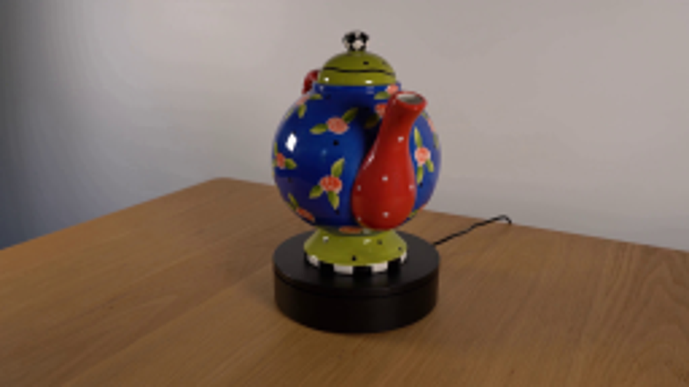
视觉工具实际返回图片 2
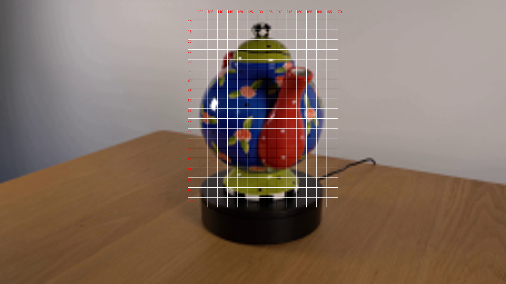
视觉工具实际返回图片 3
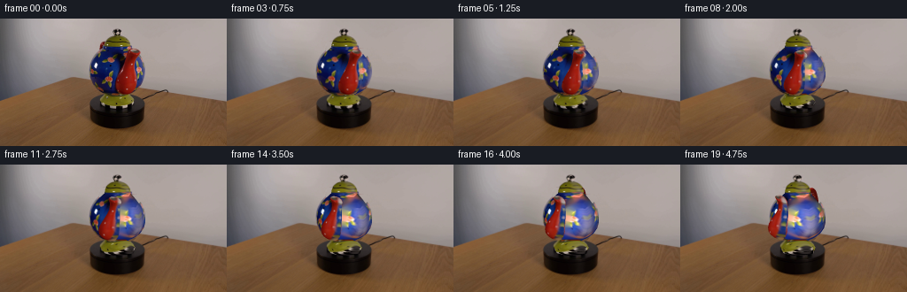
视觉工具实际返回图片 4
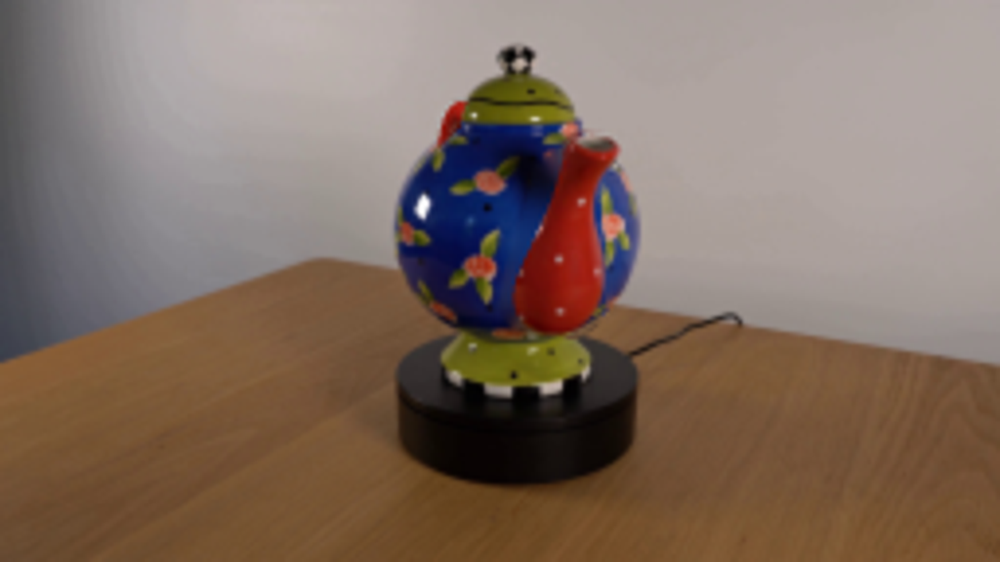
视觉工具实际返回图片 5
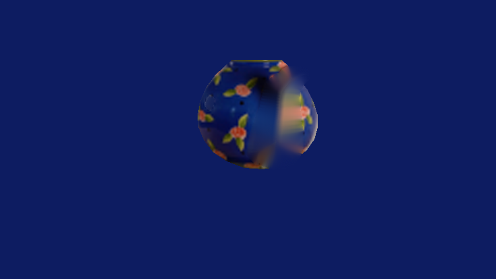
视觉工具实际返回图片 6
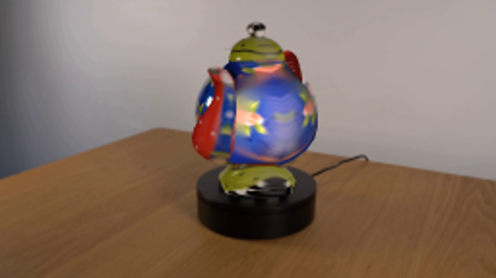
视觉工具实际返回图片 7
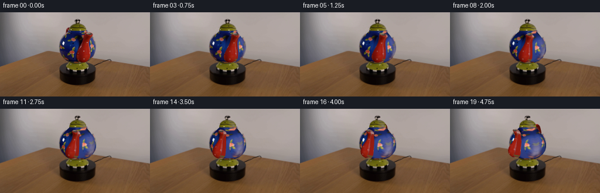
视觉工具实际返回图片 8
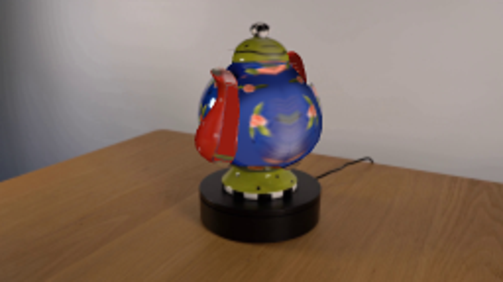
视觉工具实际返回图片 9
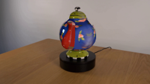
视觉工具实际返回图片 10

视觉工具实际返回图片 11
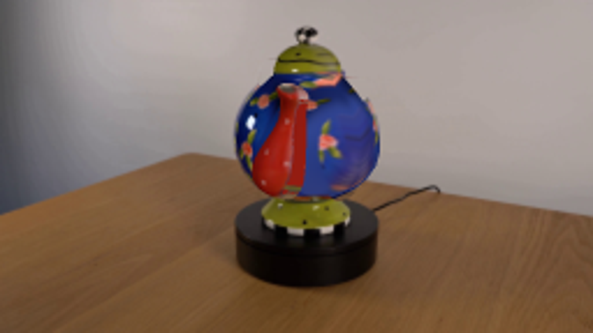
保存候选 5 份；完成命令 15 次；可验证图片返回 11 张。原始 API 响应与完整日志保留在本地。